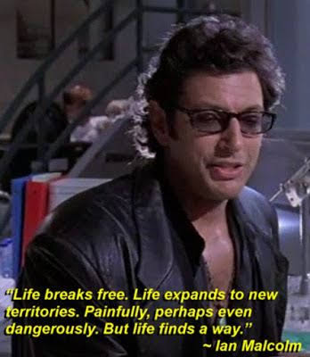

La Tierra lleva milenios existiendo y el ser humano no llega ni al 1% de tiempo existiendo en esta. Y aún así hemos hecho un daño incalculable. La Tierra ha presenciado diversa fauna y flora. Desde su nacimiento y ascenso en la cadena alimenticia como también ha visto la caída y extinción de estas. Ahora las cosas han cambiado, el planeta se ha cansado de los daños que ha recibido de nosotros. Está tomando las riendas de su destino y el nuestro. Como los antiguos reptiles que reinaron la Tierra millones de años atrás y ahora la humanidad. Tenemos que decidir si nos adaptamos y buscamos arreglar lo que hemos hecho o, como toda civilización y vida pasada, enfrentamos nuestra extinción a manos de la naturaleza como lo hizo la civilización de Atlantis.
La supervivencia de un grupo de individuos no es un privilegio del destino. Es un desafío, es ver quién se enfrenta al destino y se adapta. Y el planeta ha tomado su elección y ha decidido un veredicto. La humanidad debe aprender una lección: "No somos la especie dominante del planeta".
El control no es nuestro y nunca lo ha sido, pero parece ser que no es una lección que hayamos aprendido todavía.
Concluyo lo dicho con el siguiente citado del DR. Ian Malcom:
